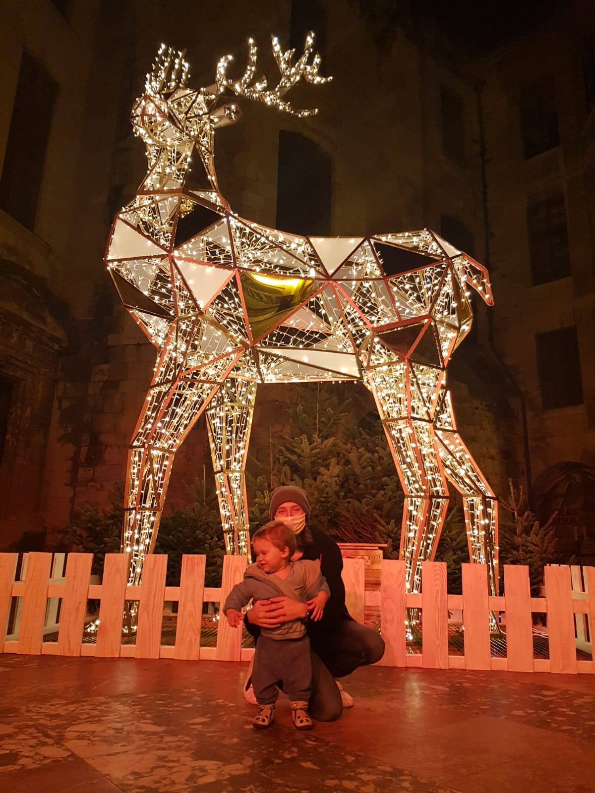

Emilie, 27 ans
J'ai choisi ces locations car elles représentent chacune un pôle différent: Santé, Culture, Sport, Alimentation et Tourisme. Ce sont des points importants à connaître en tant que citoyen établi, nouvel arrivant ou simple touriste.


 Il constitue depuis son ouverture en 1976 et sa réhabilitation en 1992, un des équipements incontournables de Narbonne Fréquenté annuellement par des milliers de narbonnaises et de narbonnais, il est avant tout un grand espace vert public.
Il constitue depuis son ouverture en 1976 et sa réhabilitation en 1992, un des équipements incontournables de Narbonne Fréquenté annuellement par des milliers de narbonnaises et de narbonnais, il est avant tout un grand espace vert public. Premier établissement public de santé de l’est-audois, situé au deuxième rang régional par son volume d’activité, le Centre Hospitalier de Narbonne dispose de 500 lits et a pour mission d’offrir des services diagnostiques et d’assurer toute la gamme des soins aigus en médecine, chirurgie et obstétrique, des soins de suite et de longue durée ainsi que des soins en psychiatrie.
Premier établissement public de santé de l’est-audois, situé au deuxième rang régional par son volume d’activité, le Centre Hospitalier de Narbonne dispose de 500 lits et a pour mission d’offrir des services diagnostiques et d’assurer toute la gamme des soins aigus en médecine, chirurgie et obstétrique, des soins de suite et de longue durée ainsi que des soins en psychiatrie.